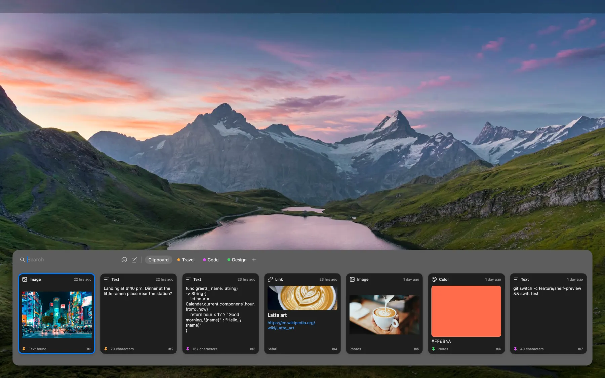
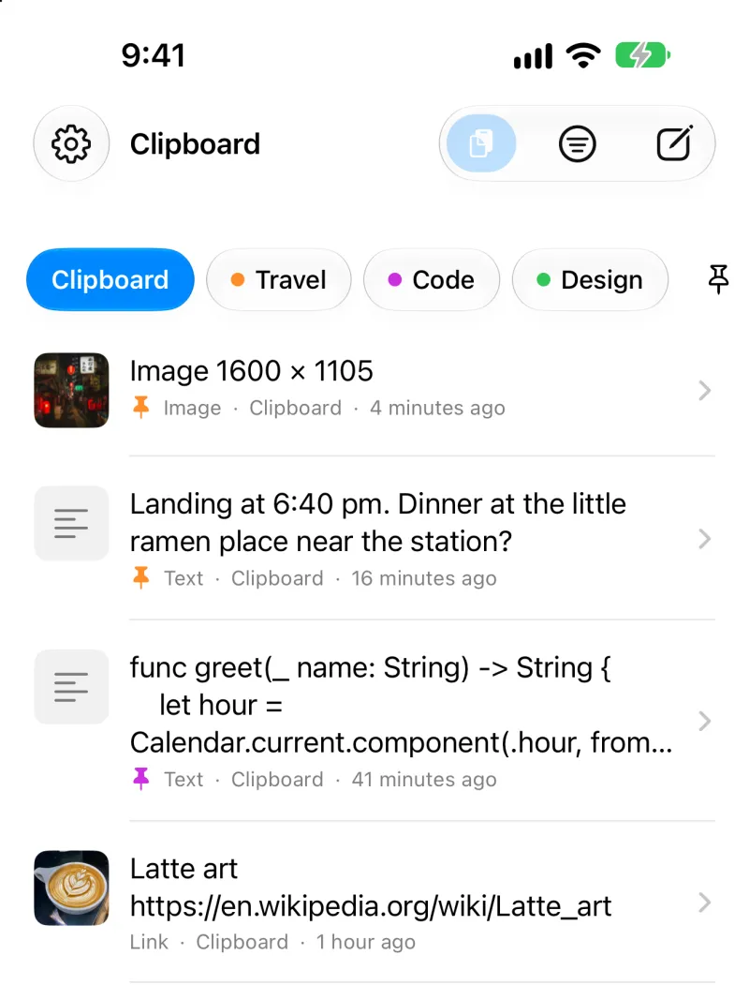
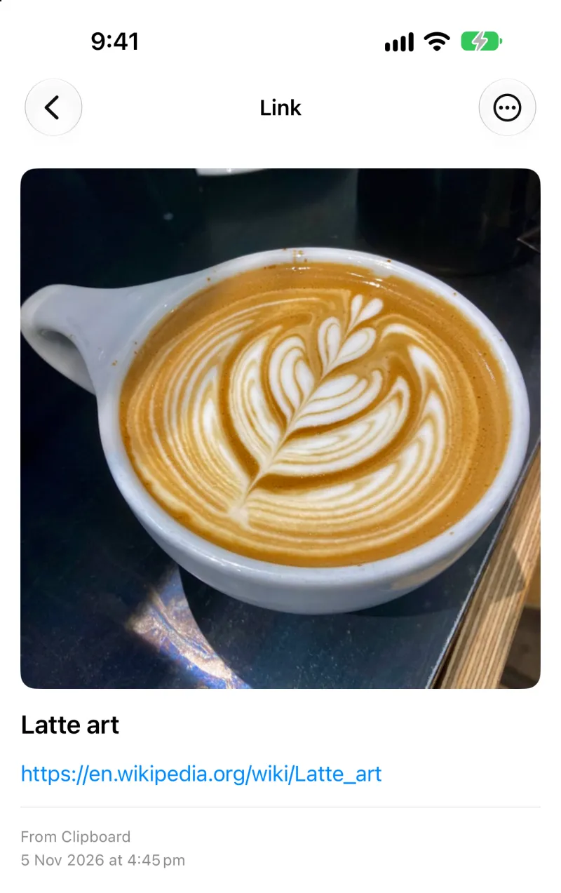
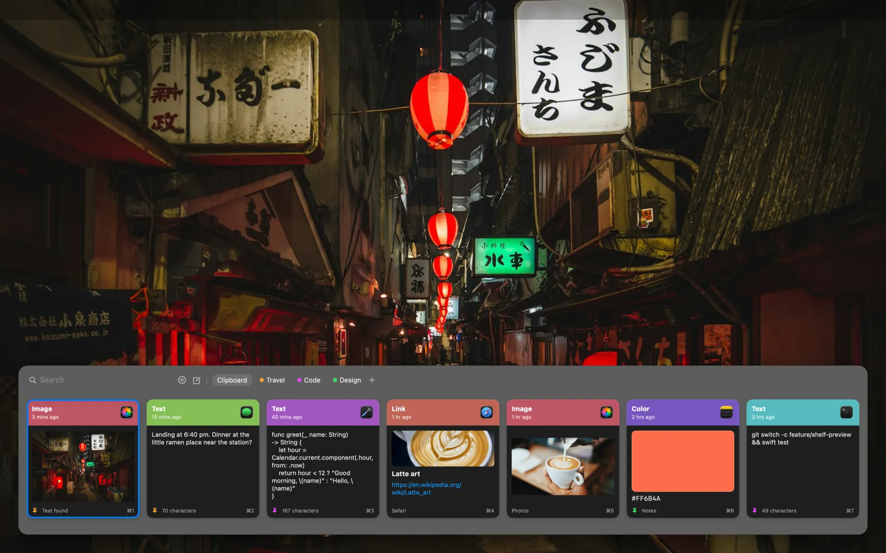
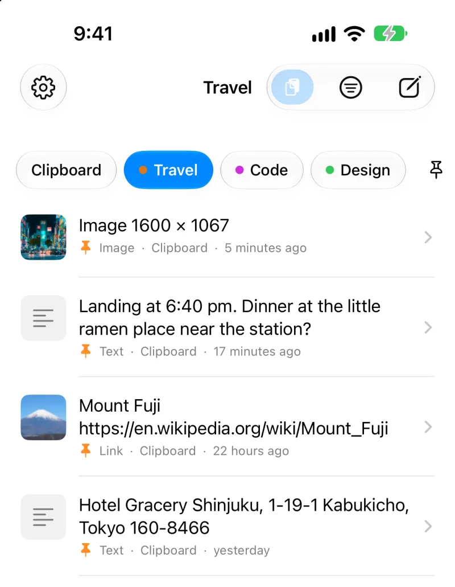
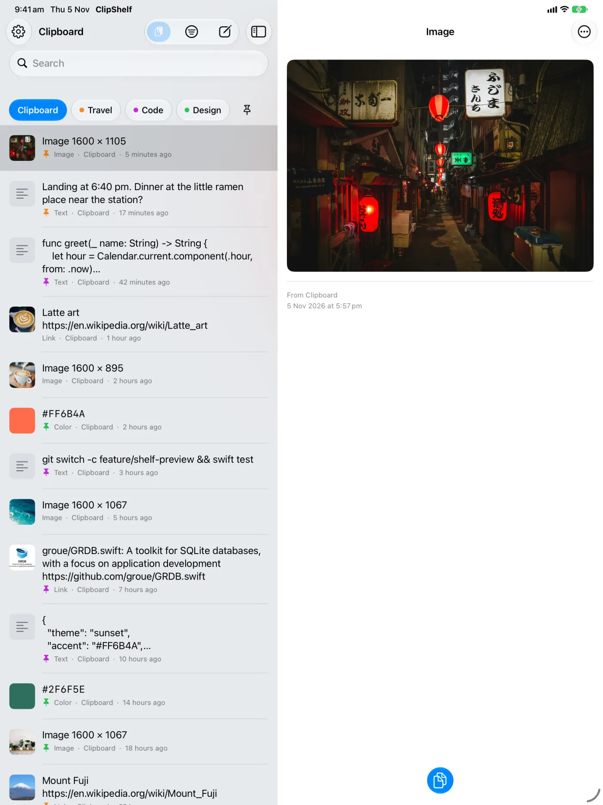
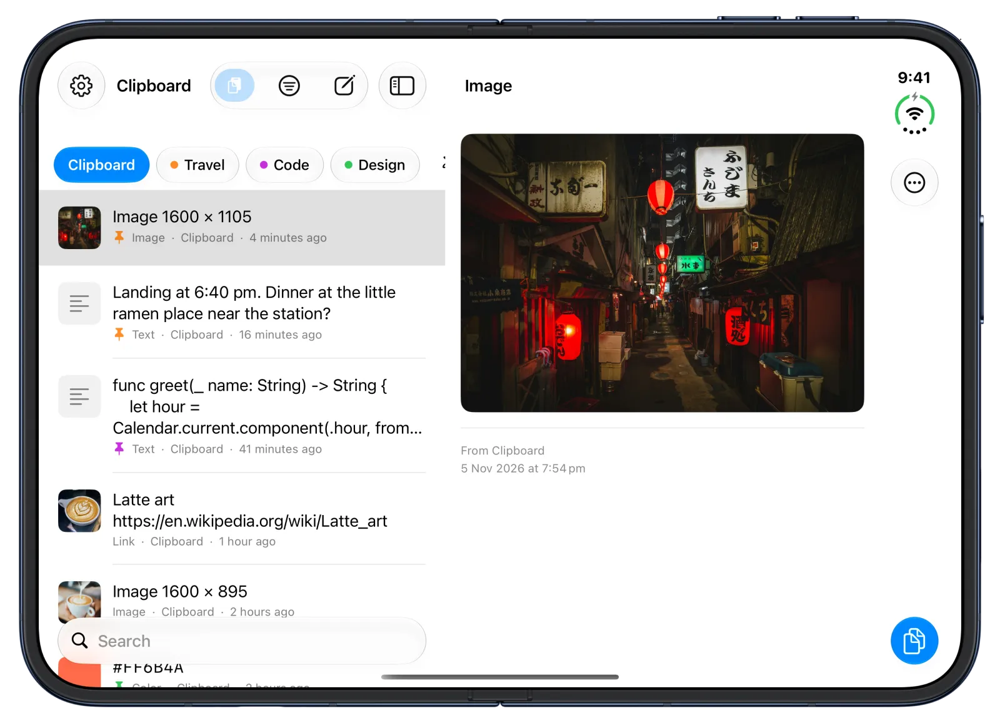
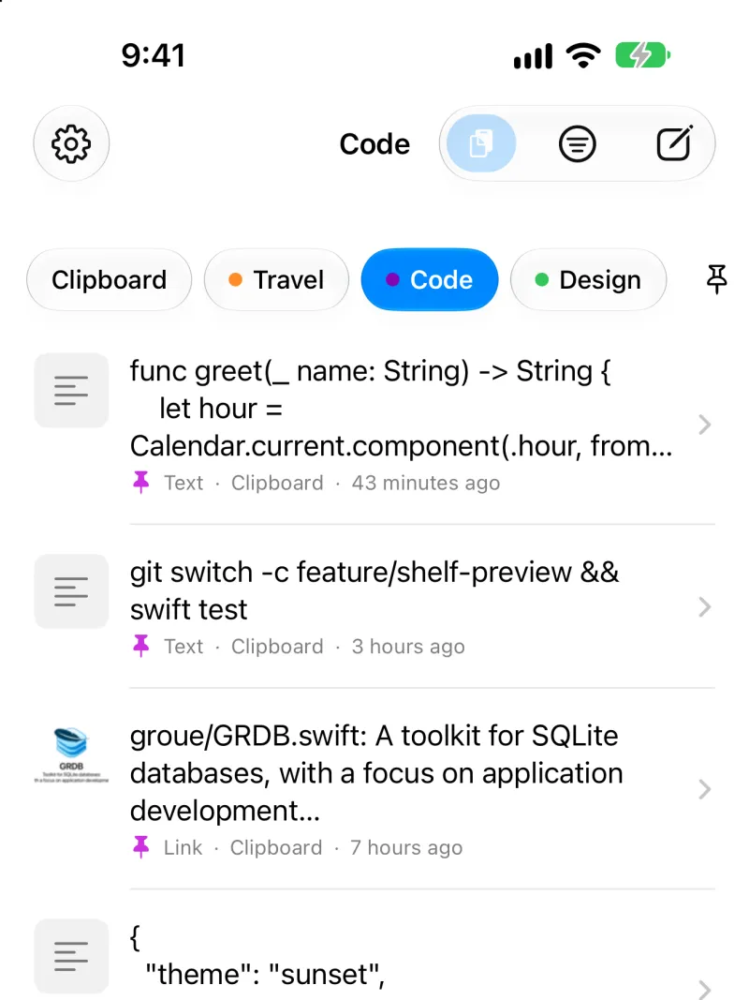
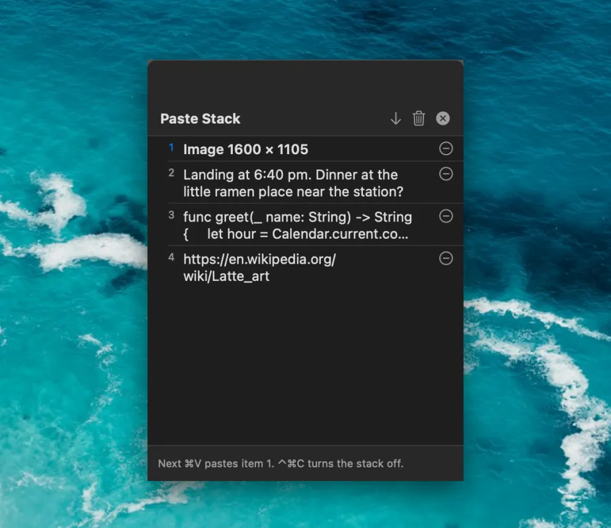

ClipShelfClipboard manager for iPhone and Mac



Everything you copy, kept on a shelf you can search.
Text, links and images, on your devices and in your own iCloud.
Free on iPhone and iPad.
One shelf on every Apple device
Copy on your Mac and find it on your iPhone. ClipShelf is built for each screen, and optional iCloud sync keeps them together.

ClipShelf for Mac
Press Shift-Command-V in any app. Coming to the Mac App Store.

ClipShelf for iPhone
History, pinboards and a keyboard for any app.

ClipShelf for iPad
The list and the item, side by side.

ClipShelf on iPhone Duo
Open it to see the list and the item split at the fold. Close it to go back to the list.
Copy something and watch it land
Open a row and press Copy, or select any words on this page and copy them. They land on a small shelf, the way they do in the app.
Landing at 6:40 pm. Dinner at the little ramen place near the station?Messages15 minsText
Landing at 6:40 pm. Dinner at the little ramen place near the station?
git switch -c feature/shelf-preview && swift testTerminal3 hrsCode
git switch -c feature/shelf-preview && swift test
https://en.wikipedia.org/wiki/Latte_artSafari1 hrLink
https://en.wikipedia.org/wiki/Latte_art
#FF6B4ANotes2 hrsColor
#FF6B4A
Hotel Gracery Shinjuku, 1-19-1 Kabukicho, Tokyo 160-8466MapsYesterdayAddress
Hotel Gracery Shinjuku, 1-19-1 Kabukicho, Tokyo 160-8466
{ "theme": "sunset", "accent": "#FF6B4A" }Xcode10 hrsJSON
{ "theme": "sunset", "accent": "#FF6B4A" }What your clipboard can do

Pinboards
Keep items on named, colored boards, such as Travel or Code. Pinned items never expire.
Search
Find items by words, then filter by type and date.
Colors, links, images
Each one looks like what it is.

Paste Stack on Mac
Press Control-Command-C, copy several items, then press Command-V to paste them one by one.
One shortcut on Mac
Open your history from any app. Command-1 to Command-9 copy the first nine items.
Keyboard on iPhone
The ClipShelf keyboard shows recent items and pinboards in any app. Tap an item to type it.
Private by design
No account, no ads, no tracking. Sync is off until you turn it on, and then it uses your own private iCloud.
Text in images
On Mac, text in copied images is recognized on the device, so you can search for it.
Link previews
Links show the page's title and image. You can turn this off in Settings.
How it works
First you copy it, as you always do.
Then it lands on your shelf, with where it came from.
Pin it, and it stays until you remove it.
Turn on sync, and it follows you to your other devices.
Common questions
What is ClipShelf?
ClipShelf is a clipboard manager for Mac, iPhone and iPad. It keeps the text, links and images you copy in a history you can search, so you can use them again. You can keep important items on named, colored pinboards, where they never expire.
Does iPhone have a clipboard history?
No. iOS remembers only the last thing you copied. ClipShelf adds a history, but iOS lets apps read the clipboard only while they are open. So ClipShelf saves what you copied when you open the app or its keyboard, when you tap its paste button, or when you share something to it.
How do I see my clipboard history on a Mac?
macOS also holds only one copied item. With ClipShelf on your Mac, press Shift-Command-V in any app to open your history at the bottom of the screen. Type to search, press Return to copy an item, then press Command-V to paste it.
Is ClipShelf free?
ClipShelf for iPhone and iPad is free on the App Store, with no in-app purchases and no ads. ClipShelf for Mac is a separate paid app with a one-time price and no subscription. It is in App Review now.
Is it safe to keep my clipboard in an app?
ClipShelf has no accounts and no servers of its own, and it does not use analytics or advertising. Your history stays on your devices. On Mac it skips content that apps mark as confidential, such as passwords from password managers, and content from apps you choose to ignore.
How does sync between Mac and iPhone work?
Sync is off until you turn it on. When it is on, ClipShelf uses the private database of your own iCloud account, so the developer cannot read it. Turn on sync on each device and sign in to the same iCloud account. You can sync everything or only your pinboards.
Why does the keyboard ask for Full Access?
The ClipShelf keyboard needs Full Access to read your history, which is stored in a container it shares with the app. It only inserts the items you tap. It does not record or store what you type, and it does not use the network.
Stop copying things twice
ClipShelf is free on iPhone and iPad, and works with ClipShelf for Mac through your own iCloud.